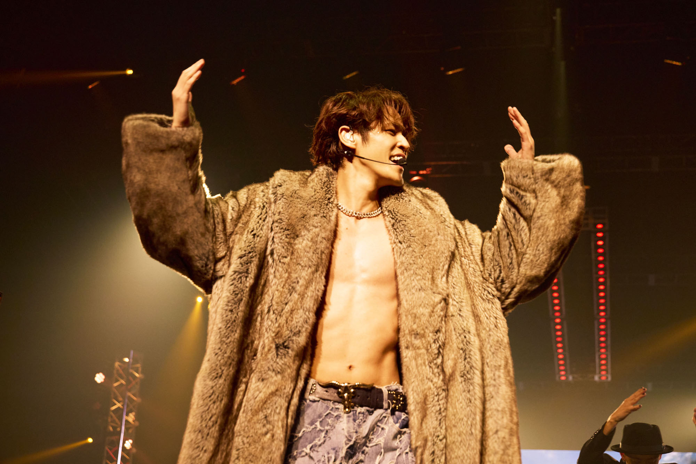

宮野真守
声優
基本介紹
於7歲時加入向日葵劇以童星出道。 為聲優界的TOP超人氣聲優，更以歌手身分活躍於歌壇，是少數會唱又會跳的聲優，再加上本人長相帥氣身高又高，被稱為“聲優界王子殿下”。

個人檔案
雖然本人長得很帥，但卻喜歡顏藝。擅長透過各種搞笑的對話和行為來控制現場的氣氛。
- 生日: 1983/6/8
- 年齡: 42
- 暱稱: マモ、マモちゃん(mamo)
- 居住地: 日本埼玉市
- 性別: 男
- 身高: 182
- 職業: 聲優, 演員, 歌手
- 所屬公司: 向日葵劇團
其實曾經因為長得很帥在路上被男公關的人挖角。被說是明明可以靠臉吃飯卻要靠才華吃飯的殘念系帥哥。 顏藝的部分也是認為自己人氣能夠那麼高都是拖角色的福，所以想讓大家覺得自己本人也很有趣。
技能
做為全能的人類，mamo在很多領域都十分突出。
搞笑力 100%
歌唱力 100%
控場力 70%
顏值 100%
演技 90%
笑點 10%
所作所為
初衷是希望大家在欣賞他的作品、節目的時候可以很快樂，現在的他依然維持這樣的初衷，演唱會、還有各種高難度舞蹈動作，只要是能力所及的部分他都會盡力的去做，甚至為了讓自己的體力能跟上演出，跑去鍛鍊身體，非常的敬業而且很寵粉絲
成就
聲優相關
- 2001年，通過試音在海外電視劇《Caitlin's Way》當中出演，成為其聲優出道作，之後以《死亡筆記》的夜神月、《機動戰士高達00》的剎那·F·清英等角色使知名度大為提升。
- 2008年 - 憑電視動畫《死亡筆記本》及《機動戰士鋼彈00》榮獲第七屆東京動畫賞個人賞（聲優）
- 2013 - 獲得日本アニカン大賞2012男性聲優部門獎第一位
- 2020年 - 榮獲 「WEIBO Account Festival in Tokyo 2020」最佳聲優獎
歌手相關
- 2007年5月23日，發行單曲《久遠》，為首次以本人名義發行的單曲
- 2008年6月4日以單曲《Discovery》正式歌手出道
- 2009年4月11日 - 28日，自己首次舉辦個人演唱會「MAMORU MIYANO 1st LIVE TOUR 2009 ～BREAKING!～」
- 2013年10月4日在日本武道館舉辦演唱會，成為第七位以個人名義登上武道館的聲優，也是第一位以個人名義登上武道館的男聲優。
- 2015 - 於Oricon排行榜上榮登第一，為史上第一位男聲優
經驗
一些有名的代表角色
- 須王環《櫻蘭高校男公關部》
- 夜神月《死亡筆記》
- 剎那·F·清英《機動戰士高達00》
- 賽羅奧特曼《奧特曼系列》
- 岡部倫太郎《命運石之門》
- 一之瀨時矢《歌之王子殿下》
- 賽羅奧特曼《奧特曼系列》
- 太宰治《文豪野犬》
- 永井圭《亞人》
- 巽幸太郎《佐賀偶像是傳奇》
- 童磨《鬼滅之刃》
- 松岡凜《Free!》
- 要圭《失憶投捕》
- 宮侑《排球少年》
作品
Mamo作為聲優、歌手和演員創作了很多作品，根據知名度以及個人喜好等考量，我挑出了一些來介紹。

{kind=link}
{kind=link}
{kind=link}
{kind=link}
{kind=link}
{kind=link}
{kind=link}